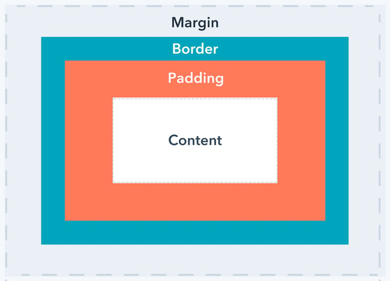

✪ CSS Margin and Padding
CSS margin is a property that defines the space between an element's border and the surrounding elements. It allows you to create a gap or distance between the element and other elements on the page.
CSS padding is a property that adds space between an element's content and its border. It allows you to control the amount of space between the content and the edge of the element, without affecting the layout or size of the element itself.

★Margin:
- ➤ Margin is the space outside the element's border, which separates it from other elements.
- ➤ The margin can be set for each side of the element (top, right, bottom, and left), or it can be set as a shorthand for all four sides.
- ➤ For example, to set a margin of 10 pixels for all sides of an element, you can use the following CSS code:
- ➤
- ➤ To set different margins for different sides of an element, you can use the following CSS code:
- ➤
★ Padding:
- ➤
Padding is the space between an element's content and its border. Padding can also be set for each side of the element or as a shorthand for all four sides.
- ➤ For example, to set a padding of 10 pixels for all sides of an element, you can use the following CSS code:
- ➤
- ➤ To set different paddings for different sides of an element, you can use the following CSS code:
- ➤
- ➤ Both margin and padding can be set using different units such as pixels, ems, and percentages. Understanding how to use margin and padding properly can help you create well-designed web pages that are visually appealing and easy to navigate.